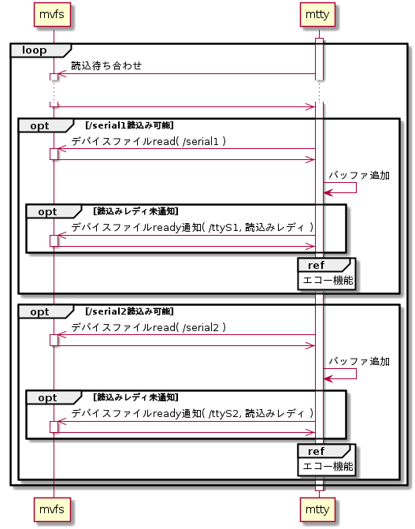
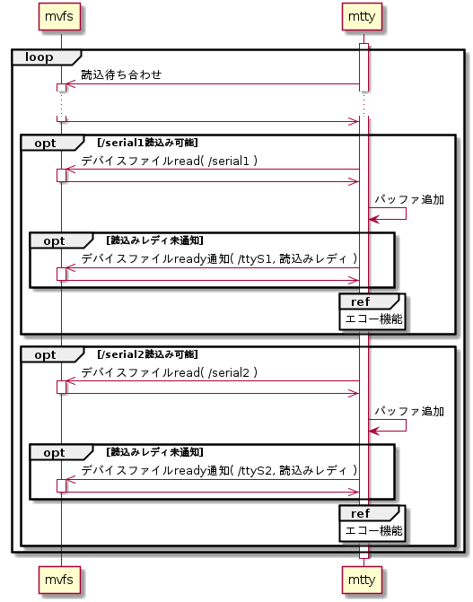

デバイスファイルread機能
open済のすべてのデバイスファイルの読込み待ち合わせを行い、読込み可能な場合はデバイスファイルから読み込み、mtty内バッファへの格納してエコー機能を実行する。シーケンスを下記に示す。
シーケンス


読込み待ち合わせ
読込み待ち合わせはmvfsライブラリのLibMvfsSelect()を用いる。待ち合わせるデバイスファイルと設定パラメータを以下に示す。
待ち合わせ対象デバイスファイル
| # | デバイスファイル |
| 1 | /serial1 |
| 2 | /serial2 |
LibMvfsSelect()設定パラメータ
| # | 引数名 | 設定値 |
| 1 | *pReadFds | 読込監視FDリストポインタ |
| 2 | *pWriteFds | NULL |
| 3 | timeout | 0 |
| 4 | *pErr | エラー要因格納先ポインタ |
デバイスファイルread
デバイスファイルreadはmvfsライブラリのLibMvfsRead()を用いる。設定パラメータを以下に示す。
LibMvfsRead()設定パラメータ
| # | 引数名 | 設定値 | |
| /serial1 | /serial2 | ||
| 1 | fd | シリアルポート1のFD | シリアルポート2のFD |
| 2 | *pBuffer | (読込みデータ格納先ポインタ) | |
| 3 | bufferSize | 512 | |
| 4 | *pReadSize | (読み込んだデータサイズ格納先ポインタ) | |
| 5 | *pErrNo | (エラー要因格納先ポインタ) | |
バッファ追加
ターミナルファイルread要求時にデータを渡すために、デバイスファイルから読み込んだデータは、デバイスファイル毎の内部バッファにデータを追加しておく。